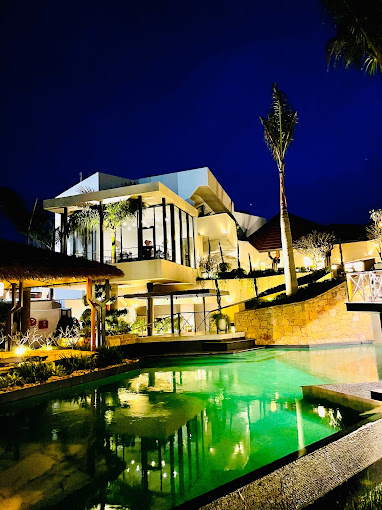

A luxury resort focused on wellness and relaxation. Stay in style, dine with weighty options, and explore the surrounding area with the best guides the region has to offer.
About
The Borgo is a wedding venue located in Ludhiana. Its ideal location is near the famous G.N.E. College and is accessible by road to everyone in the city. It counts two spacious halls with modern yet classy interior décor to give your wedding a unique touch of style and sophistication. The venue also takes your guests and you on a gastronomic journey with its exquisite regional and international delicacies. When looking for a perfect venue with all the facilities in the city, The Borgo is the name you should not miss.

About the Venue
Overloaded with marriage work? Confused to choose a perfect wedding venue from the other wedding venues? Please don't worry! We are here to make your work easier. We represent The Borgo - Luxury Banquets located in Bulara Rd, Gill, Punjab with the spacious air-conditioned hall, superb car parking lot and excellent staff with utmost discipline and dedication. Our flabbergasting architecture ... Read more
Venue Info
Vi 1
Air Conditioning
Vi12
Cuisines Allowed
Veg & Non Veg
Vi6
Payment and Booking
• Advance for booking is 30%
• Payment on event date 70%
Vi5
Cancellation Policy
depends on situation
Vi8
Rooms available
• 8 Guest Rooms
• 8 AC Rooms
• 8 Bride/Groom Rooms
Vi7
Parking Space
• 100 Bike parking
• 100 Car parking
Vi9
50 weddings conducted
Vi10
Nearby Areas